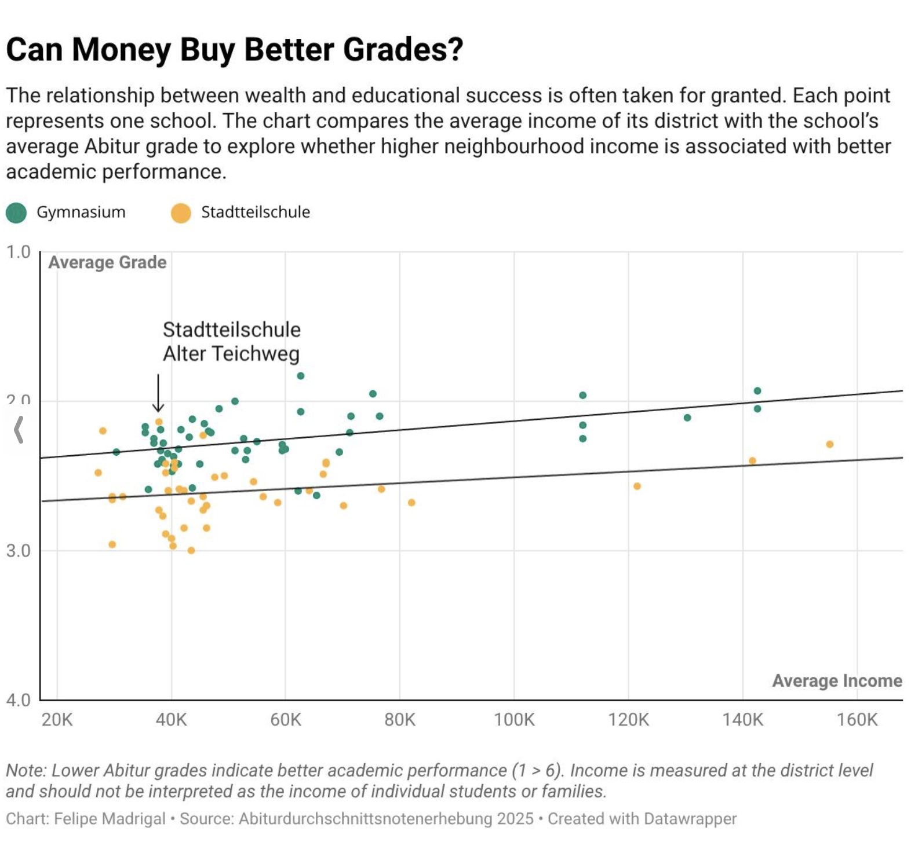

A data-driven investigation into Hamburg's school system – told through Isabel's story.
Isabel with her mother – 1999 · Photograph: RickP.
For many families, choosing a secondary school is one of the first major educational decisions they face. In Hamburg, the choice usually comes down to two paths: Gymnasium or Stadtteilschule. Both can lead to the Abitur, yet they differ in learning pace, structure, and reputation. The question is: How much does that choice really matter?
“Isabel, what brought your family to Hamburg?”
"My mother believed that I would have better educational opportunities in Germany so she decided to move back to her homecountry and city.”
“And how did your mother end up choosing your school?”
“She believed attending a Gymnasium would equal a higher chance of me graduating and ultimately lead to a better education. She wanted to give me every possible advantage in life.”
“She also worried that her low income could affect my education.”

No. Better financial standing surely affects education but this merely shows a correlation, not a causation.
As our further investigation will reveal: the story isn’t that simple...
“So did you end up in a Gymnasium?”
“Yes, but the Gymnasium I attended was pretty "posh" so many of my classmates came from wealthier families. I often felt like I was living in a completely different world. Those social complications made it very difficult for me to learn.”
As mentioned – the story isn’t that simple.
Attending a Gymnasium in a high income district doesn't automatically equal a better education.
The visualization below shows that there are schools that achieve outstanding Abitur results despite being located in lower-income districts.
Gymnasien as well as Stadtteilschulen!
In the end Isabel’s mother transferred her from the Gymnasium to a Stadtteilschule and found a more fitting school in Stadtteilschule Alter Teichweg!
“Did you feel more comfortable then at the Stadtteilschule?”
“Yeah, so much more, actually. The Stadtteilschule I attended was a concept school, which meant that learning was much more individualized. We had more freedom in how we worked, teachers encouraged us to learn at our own pace, and there was a stronger focus on personal development rather than just grades. That environment suited me much better.”
The visualization compares the average results of Hamburg’s official school inspection reports for Gymnasien and Stadtteilschulen. These inspections are conducted by the city’s school authority to evaluate the overall quality of a school. Rather than measuring students’ exam results alone, inspectors assess a wide range of criteria, including the quality of teaching, school leadership, learning culture, individual student support, inclusion, and the overall school environment.
Interestingly, the data show that Stadtteilschulen achieve slightly higher average inspection scores than Gymnasien. This suggests that educational quality depends on more than academic performance or school type alone. A school’s learning environment, teaching approach, and support structures also play an important role. Isabel’s experience reflects this finding: after transferring to a concept-based Stadtteilschule, she found a learning environment that better matched her needs and ultimately supported her learning more effectively.
When we compare these findings with the Social Index, the picture becomes more complex. Although Stadtteilschulen achieve slightly higher average scores in Hamburg’s school inspection reports, Gymnasien still produce stronger academic outcomes overall, particularly in districts with a more advantaged social background. This suggests that educational success is influenced not only by school quality, but also by the social and economic conditions in which students grow up.
When asked what advice Isabel and her mother would give to parents choosing a school today, Isabel says:
“I wouldn’t choose a school based on its name or reputation alone. Every child is different. What matters most is finding a learning environment where they feel comfortable, supported, and motivated to learn.”
Our analysis supports this perspective. Data can reveal patterns and inequalities, but they cannot determine which school is the right fit for an individual child.
That decision should always take a child’s needs, personality, and learning environment into account.